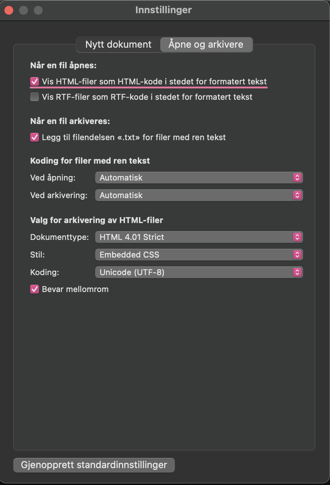

Kom i gang
1. Last ned teksteditor
For å redigere en HTML-fil trenger du et tekstredigeringsprogram. Vi anbefaler å laste ned Visual Studio Code herfra https://code.visualstudio.com. Hvis du ikke har mulighet til å laste ned dette kan du bruke Notepad på Windows eller Tekstredigering på Mac.For Mac
For å redigere HTML i Tekstredigering må du skru på "Vis HTML-filer som HTML-kode i stedet for formatert tekst" inne på innstillinger her:
2. Åpne mappen/filen med koden i redigeringsprogrammet
Oppgavene skal løses i din_hjemmeside.html og din_hjemmeside.css så du må åpne disse
filene i redigeringsprogrammet. Hvis du ønsker å se hvordan koden ser ut på de andre sidene kan du også åpne
disse filene i redigeringsprogrammet.
Oppgaver
din_hjemmeside.html,
og all CSS-kode(styling) skal skrives i din_hjemmeside.css. Alt du gjør vil da vises under "Din
hjemmeside"-fanen i menyen. Husk derfor å "refreshe" siden når du har lagret nye endringer i filene så de blir
synlige på nettsiden.
Oppgave 1
din_hjemmeside.html endre tittel på din hjemmeside til ønsket tittel, dette kan for
eksempel være navnet ditt. OBS! Med tittel så menes teksten som står i fanen på nettsiden som du ser på bildet under.
Hint: https://www.w3schools.com/tags/tag_title.asp
Oppgave 2
din_hjemmeside.html skriv litt om deg selv eller noe du liker i den første div-en med
class: om_meg.
Oppgave 3
din_hjemmeside.css endre bakgrunnsfarge på div-en der du skrev inn en liten tekst i
oppgave 2.
Når du skal velge farge kan du enten bruke noen av disse fargene https://www.w3schools.com/cssref/css_colors.php, eller du kan finne akkurat den fargen du selv ønsker ved å bruke fargevelgeren på google og bruke koden som kommer opp i feltet markert på bildet.
Hint: https://www.w3schools.com/css/css_background.asp
Oppgave 4
din_hjemmeside.html legg til en heading over den første div-en der du
skrev inn en liten tekst. Headingen skal være overskriften på siden din, så skriv inn en passende tittel.
Hint: https://www.w3schools.com/html/html_headings.asp
Oppgave 5
din_hjemmeside.html gi headingen du la inn i oppgave 4 et klassenavn
(class) og legg til en farge på headingen i din_hjemmeside.css. NB! Et klassenavn kan ikke inneholde andre bokstaver enn a-z, spesialtegn og mellomrom. Bruk heller _ for mellomrom og ikke bruk f.eks. bokstavene æ,ø og å.
Hint: https://www.w3schools.com/cssref/pr_text_color.php
Oppgave 6
din_hjemmeside.html legg inn et bilde div-en med class:
bilde.Dette kan enten være et bilde du allerede har på pc-en, eller du kan laste ned et bilde du selv ønsker fra internett. Husk å legge bildet inn i bilder mappa som ligger i koden du lastet ned og legg til
bilder/ før
navnet på bildet i
src-feltet. Her må du kanskje også justere litt på størrelsen på bildet hvis det er veldig stort, dette må da legges direkte på bildet med å bruke
width slik som i linken under. Man bruker ofte piksler når man
skal bestemme størrelsen på elementer på HTML-siden. En piksel er en liten del(firkant) av skjermen, og
størrelsen vil variere basert på skjermoppløsningen, det vanlige på en bærbar pc er 1920px i vidden og 1080px i
høyden. Som et eksempel er vidden på bildet i oppgave 3 satt til 500px, vil man ha bildet større
kan man
øke tallet, evt. minke det om man vil ha det mindre. Hint: https://www.w3schools.com/tags/tag_img.asp
Oppgave 7
din_hjemmeside.css sidestill de to div-ene, teksten du skrev i oppgave 2
og bildet du la inn i oppgave 6 slik at de står side om side og ikke under hverandre. Husk å endre vidden av de to boksene slik at det er plass til begge to på samme linje, pass på at bildet ikke er bredere enn
div-en det er plassert inn i. Hint: https://www.w3schools.com/cssref/pr_class_float.php
Oppgave 8
din_hjemmeside.html legg til en liste under teksten du skrev, denne kan inneholde dine hobbyer,
favoritt dyr eller andre ting som passer med teksten du skrev. Hint: https://www.w3schools.com/html/html_lists.asp
Oppgave 9
din_hjemmeside.css endre farge på elementene i listen. Her kan du velge om du vil endre farge på
hele listen eller bare punktene.
Hint: https://www.w3schools.com/css/css_list.asp og https://www.w3schools.com/howto/howto_css_bullet_color.asp
Oppgave 10
- Legg til en ramme rundt teksten du skrev, https://www.w3schools.com/css/css_border.asp
- En video fra youtube, https://www.w3schools.com/html/html_youtube.asp
- Et favicon (lite bilde ved siden av tittelen som du endret i oppgave 1), https://www.w3schools.com/html/html_favicon.asp
- Et innlegg fra instagram, https://help.instagram.com/620154495870484
- Juster litt på farger, størrelser, marginer etc. på siden din slik at den ser enda bedre ut.
Inspirasjon
- https://www.w3schools.com Her kan du lære hvordan du setter sammen en nettside og finne inspirasjon underveis.
- https://oppgaver.kidsakoder.no/web Her kan du finne mange ulike oppgaver, blant annet HTML oppgaver.
- https://www.codecademy.com Her kan du finne mange kurs innen mange ulike teknologier (NB! Krever at du oppretter en bruker)